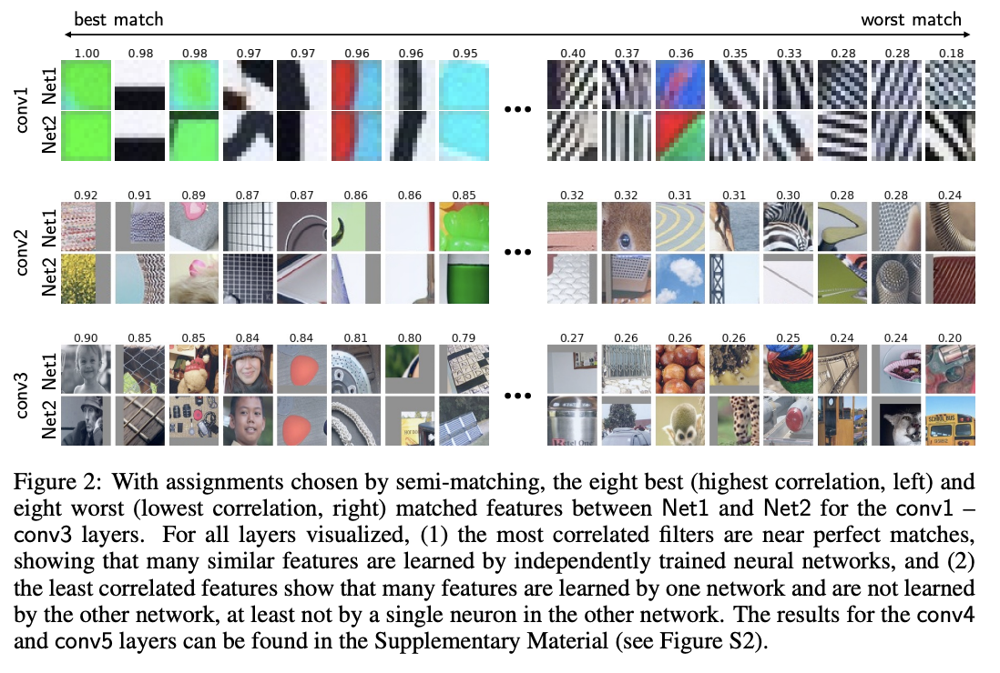
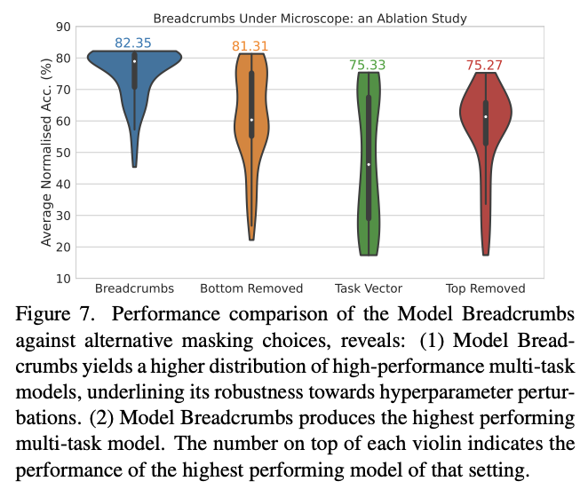
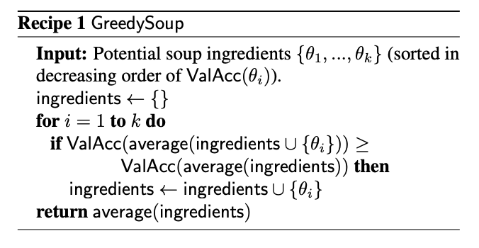

Model Merging
Table of Contents
- Model Merging and You
- Some Prerequisite Info + Acknowledgements
- Convergent Learning: Do Different Neural Networks Learn the Same Representations?
- (SLERP) Sampling Generative Networks
- Model Soups: averaging weights of multiple fine-tuned models improves accuracy without increasing inference time
- Fusing Finetuned Models for Better Pretraining
- Merging Models with Fisher-Weighted Averaging
- Git Re-Basin
- Editing Models with Task Arithmetic
- TIES-MERGING
- (DARE) Language Models are Super Mario: Absorbing Abilities from Homologous Models as a Free Lunch
- Model Breadcrumbs: Scaling Multi-Task Model Merging with Sparse Masks
- Model Stock: All we need is just a few fine-tuned models
- DELLA-Merging: Reducing Interference in Model Merging through Magnitude-Based Sampling
- Evolutionary Optimization of Model Merging Recipes
- Frankenmerging
- Appendix: Other Papers
Model Merging and You
Model Merging is a weird and experimental technique which lets you take two models and combine them together to get a new model. This is primarily used in Large Language Models, where the likely convergent representations allow this technique to work somewhat better than you might expect, given the concept. Model merging techniques are interesting since they allow researchers to create new models which are somehow performant in new ways despite not doing any additional training. I think this is really weird, so I need to know about it.
There is some work applying these sorts of merges to vision models, too, like Stable Diffusion. People will often train several adapters (e.g. one for style, one for subject, etc) and then combine them all upon the base model to get something which is performant on all the sub-tasks that were trained. We are going to read a lot of papers and try to get some sense for why this works.
There are many good resources out there for understanding how to apply mergekit to large language models. I am interested in building some intuition upon how and why these methods work, and specifically if there's any room for applying these techniques to other types of models, or other problems.
This document is a work in progress: I will be spending some cycles on model merging and will periodically update this page as I continue to read about it.
Some Prerequisite Info + Acknowledgements
For actually performing the merging, at least for LLMs, mergekit is a popular repo. It has a bunch of different methods, as well as it's own paper which I'll include for completeness.
A lot of these papers come from osanseviero's model merging collection, where I followed rabbit holes in specific papers when they appeared.
If you want a more comprehensive summary, here's a survey paper which covers non-frankenmerging topics in model merging.
Many thanks to the Sakana AI team, specifically Yujin Tang, Takuya Akiba, and Qi Sun for responding to my inquiries about model merging in a friendly and timely fashion.
Convergent Learning: Do Different Neural Networks Learn the Same Representations?
Paper can be found here. This is an old paper from 2016, but we're starting with it because it was an early paper which explored the idea that two independent networks trained on similar data could converge upon similar features, even if they happen to be permuted.
This paper trained a number of AlexNet models on ImageNet data, and then compared how similar the filters were to the closest matches in the corresponding other model. They make 5 main observations:
- The core representation is the same, but rare features sometimes appear in one model and not the other.
- One-to-one alignment of neurons holds even if you use different measures of similarity (i.e. it's not some weird artifact of the metric)
- We can create a transformation which converts one model's representation into the other's (!!!)
- We can see many-to-many mappings between clusters of neurons as well, on top of just at the neuron level
- The activation statistics between matching neurons are mostly similar as well
To run these experiments, they do multiple training runs with the same architecture upon the same data. This makes it pretty likely that the features it would learn would be roughly the same, but in different spots due to random initialization. They then use bipartite semi-matching1 to pair each filter with its most likely counterpart in the network. A good number of these are almost perfect matches, but the worst matches suggest that each network has some set of "rare features" that it learned, departing from the other network2.

To really show how the two are related, they learn a single "mapping" layer (a LASSO model, with an L1 penalty) which will predict one network's representation when provided the other. They can use the sparse prediction loss for this layer as a metric for how similar the representations are (i.e. if the loss is very low, the representations are likely to be more like a permutation, but if it's high there's probably lots of different features which don't match).
There's some good discussion here about local vs distributed representations, i.e. ones which can be directly matched one-to-one and ones which are still easy to predict by the mapping layer despite not mapping one-to-one. The result here is interesting because it suggests a pretty high degree of local mapping, suggesting that the neurons are learning important specific vectors individually rather than just being a collection of essentially random basis vectors which describe some specific subspace3.
Okay: how does this help us with model merging? Here's some takeaways:
- Similar features learned between networks trained on similar / the same tasks
- Possible to create a mapping transforming one model's representation to the other's
- From the future work section: "Model Combination: Can multiple models be combined by concatenating their features, deleting those with high overlap, and then fine-tuning?"
Also probably the biggest takeaway: these models are start from unique initializations, and as a result of the random initialization they don't share the same initial optimization trajectories, meaning all of these shared features are somewhere in the model but in a random arrangement. If we finetune some sort of source model and then "break off" from there, it's really likely that the features are all going to be in the same spots, with the differences then being about the subsequent differences from different data / hyperparameters / whatever. Indeed this was exactly what was later shown in Linear Mode Connectivity and the Lottery Ticket Hypothesis. This informs a lot of the methods which follow from here!
(SLERP) Sampling Generative Networks
Paper can be found here. This paper is also an older one, from 2016.
This paper is specifically about sampling from generative networks, but the core idea of the paper was later applied to model merging. Say you want to sample between two points from a generative model (e.g. interpolate between a human and a tiger). One naive thing you could do is simple linear interpolation, where you take the weights which generated the first image, the weights that generated the second image, and take a straight line between these two points and sample along the way at regular intervals. This will, in principle, get you a series of images which start and end with your images.
However, latent spaces are high dimensional, and traveling along linear paths like this are extremely unlikely given the gaussian / uniform priors these models typically have. What would be better if you could interpolate along the geodesic in that high-dimensional space, which is more in line with what you want (a "straight line" between both points – in a curved space this isn't a linear interpolation).
They propose using SLERP, which is a spherical linear interpolation along an n-dimensional hypersphere. This seems to do better.

Stable Diffusion finetunes are commonly SLERPed together like this – often the more popular models aren't base model but rather models with a bunch of these community finetunes SLERPED on top of each other in the weight space4.
Model Soups: averaging weights of multiple fine-tuned models improves accuracy without increasing inference time
Paper can be found here. This paper is from 2022, and was one of the early modern "model merging" works5.
The core idea here is that instead of selecting the best-performing model training run, or making an ensemble from all the trained models, we can just literally average together the weights and get the benefits of an ensemble with only one model's worth of inference and memory costs. This is a pretty interesting result: the averaged weights of multiple models yield a model which outperforms any individual model! They used this to break state-of-the-art on ImageNet. Core to this is that they're all the same architecture and trained on the same data (just with varying hyperparameters).
A lot of this relies on an earlier result which showed that "fine-tuned models optimized independently from the same pre-trained initialization lie in the same basin of the error landscape". There was also some earlier work averaging the weights of a single model along a single training run (maintaining a sort of moving average), but this work extended it to combining several models trained independently. They actually show this in figure 2 directly:

Specifically they find that using held-out data and taking a greedy approach to averaging in new models (adding them if they increase performance on held-out data) is the best way to do this. They find that this seems slightly worse than ensembles on test, and slightly better than ensembles under distribution shift. They use CLIP ViT-L, ViT-G, ALIGN (uses efficientnet for vision encoder), BASIC, a big variety of models of different types.
The related work has some interesting caveats: Linear Mode Connectivity and the Lottery Ticket Hypothesis showed different data order makes simple weight averaging ineffective (i.e. equivalent to random), but that if the two models share some part of their optimization trajectory, that suddenly averaging them works well again. In What is being transferred in transfer learning? it was shown that interpolating between two finetunes will have at least the accuracy of the endpoints.
Fusing Finetuned Models for Better Pretraining
Paper can be found here. This is a 2022 model averaging paper which concludes that for adapting a model to a new task, it's often better to average together different finetunes compared to using pretrained models.
Conceptually this paper is a bit like the model soups paper, but instead of many random finetuning runs upon the same data, it first merges together several models which were finetuned from the same base model for different tasks. For example, consider a base model for which three finetunes have been produced: one for text classification, one for natural language inference, and one for twitter irony detection. If you wanted to train this model on a fourth task, your instinct might be to start from the base model and do another finetune, but this paper claims that first merging finetunes for other tasks may result in superior pretraining for the new task.
This paper has some significance for us here because it's one of the few papers in here which is explicitly about further training the resulting merged model, rather than simply edging out the best performance at test time. Conceptually their results are easy to grasp: you want to pick the checkpoint which is already closest to your target task, and if your task is conceptually "between" two existing pretrained models, it might be closer to the solution to use a merged pretraining start point compared to using one of the finetunes (or the base model).
There's also some notes in here about how weight decay empirically destroys the benefits of starting with one of the finetunes, but doesn't seem to do that for merged models. This isn't supported by anything other than experiment, but it's interesting to note.
Merging Models with Fisher-Weighted Averaging
The paper can be found here.
This paper frames the model merging process as approximately maximizing the joint likelihood of the models' posterior distribution over parameters, and that if you use an isotropic gaussian distribution to approximate the posterior, maximizing this joint likelihood is equivalent to just averaging the weights. They call this isotropic merging as a result.
In contrast, they think a better way to approximate this posterior would yield a better result. So, use the Laplace approximation instead, by taking the diagonal of each model's Fisher information matrix as the precision matrix for that model's posterior. They call this Fisher merging to distinguish it from isotropic merging, and they show that it's often a bit better.
The difference here is pretty subtle, but it does seem a little bit better than normal averaging6.
Git Re-Basin
This paper can be found here.
This paper's thesis is very interesting. The core idea is that there's usually a single optimal basin in the loss landscape once you account for all the possible permutations (which are all essentially the same solution, just permuted to be in a different location). This means if we can figure out how to permute two models to have the same arrangement of hidden units, we should pretty much always be able to merge the two models.
Basically, this paper tries to solve the permutation problem we saw in the convergent learning paper.
They provide three methods for matching units between two different models.
- Match the activations by performing Ordinary Least Squares (OLS) regression to solve a linear assignment problem (LAP), which is an old and well-studied problem which has lots of efficient solutions.
- Match the weights by solving a "sum of bilinear assignments problem" (SOBLAP) (unlike 1 this is NP hard, but can be solved via approximation and ignores the data distribution completely)
- Learn a straight-through estimator which specifically learns a correct permutation
Straight-through estimator performs the best, but the other methods are almost as good and much cheaper – especially algorithm 1, which runs in a few seconds and doesn't require access to data. Unlike the other papers in here this paper is pretty dense, quite theoretical rather than being hacky. They don't always get zero-barrier (i.e. in the same loss basin) but usually they get a big reduction which enables some sort of merge to be possible.
Thankfully they have code, actually code for the actual methods, see weight-matching.py which actually does algorithm 1 in there. It's in Jax though.
This isn't used that much in the papers which follow, which mostly deal with merging finetunes together. It seems like it should be necessary for language models in particular (note that this is a general model merging paper), since those often don't even have the same architecture, but for some reason they seem unnecessary there.
Editing Models with Task Arithmetic
Paper can be found here.
Task Arithmetic builds task vectors by subtracting pre-trained weights from fine-tuned model weights. What you get as a result is a vector where if you apply it to the base model, you improve it at that task. If you build a bunch of task vectors, you can do interesting vector arithmetic with them: negating the vector will make you worse at that task, adding task vectors together will make your model better at both things, etc. You can even improve performance through task analogies, e.g. A is to B as C is to D, where adding A, B, and C to the model as task vectors will improve D even with no data or training directly on that task.
This is interesting because we can remove things by training models which do those things. For example, if we train a toxic model and then add the negated toxic task vector, we get a less toxic model. We can learn via addition or forget via negation. Task analogies work a similar way: for example, we can approximate a task vector for "Yelp Sentiment Classification" by starting from "Amazon Sentiment Classification", adding "Yelp Language Modeling" and subtracting "Amazon Language Modeling".
The above is essentially the entire content of the paper, it's very simple. The rest after this figure is formalization (\(\theta_{new} = \theta + \lambda\tau\) where \(\tau = \theta_{ft} - \theta_{pre}\), and this is equivalent to a full finetune when \(\lambda = 1\)) and experiments on a variety of image and natural language processing models/tasks.
The discussion section has a lot of really interesting points. One big finding they see is that vectors from different tasks are close to orthogonal, which is what you would expect if the different tasks are essentially random vectors (which are likely to be close to orthogonal in high dimension). This likely helps explain why adding them together seems to cause minimal interference with each task. Likewise, intermediate task vectors seem to converge very quickly to the appropriate direction, suggesting that you could even potentially do crazy things like halt training early and just modify the magnitude of the task vector instead. They also reference the git re-basin paper as potential work where the merging could occur between models which are not derivatives of the same base model.
Overall this seems like a promising merging direction, and in general seems like a cool step towards making models more generally interpretable in the first place. One could imagine a model with tons of these little task vectors applied to it, where you can visibly modify specific behaviors this way.
TIES-MERGING
The paper can be found here.
Existing merging methods tend to ignore interference between parameters of different models, and this is what the authors claim is the source of performance drops during merges. The two major sources of said interference are 1: redundant parameter values, and 2: disagreement on the sign of a parameter's value.
TIES-MERGING stands for… TrIm, Elect Sign and MERGE7. This, appropriately, has three steps. First, clip parameters that only changed a little bit during training. Second, resolve the sign conflicts. Third, merge only the parameters that are in alignment with agreed-upon sign. This seems to help!


This is considered one of the more sophisticated methods despite still being just a pretty simple modification to task arithmetic. This outperforms vanilla Task Arithmetic, RegMean, Fisher Merging, and Model Soups, but obviously it doesn't really do anything different from task arithmetic if you're only merging one task vector to the base model.
Why does this work? Don't we need the little updates too, given that the gradient updates we got from training produced them? Turns out no, you really don't – most of the difference in performance comes from the parameter changes which are really big, and literally zeroing out 80% of the task vector will usually do almost nothing to the performance.

So it's empirically well-motivated8 to trim out the activations which are small, leaving us a task vector which is mostly sparse and mostly does the same thing, but is less likely to cause problems with the model merge process, especially if the values would cause sign disagreements.
For sign disagreements, they pick the one with the highest total magnitude across all the models (i.e. sum of all the + values vs sum of all the - values). They "disjoint merge" means you set everything which is the wrong sign to 0, and then from there it's a normal merge9. This seems to perform pretty well, usually outperforming other methods on most tasks, and performing worse if any of the steps are ablated (i.e. making it more similar to vanilla task arithmetic).
(DARE) Language Models are Super Mario: Absorbing Abilities from Homologous Models as a Free Lunch
This paper can be found here. The framing of this paper is EXTREMELY funny. Language models are Super Mario! You know, because they absorb, uh, items.
DARE is another method which zeros out small differences, it stands for Drop And REscale. This is often combined with other methods in practice. The step which most differentiates this from TIES-MERGING is this final rescaling step – on top of dropping parameters, they also scale the remaining ones by \(1 / (1 - p)\) where \(p\) is the random drop rate. With this addition, they find they're able to drop 90-99% of the delta parameters, which means you can add lots of different vectors for very minimal cost. This paper, relative to other ones we've seen, is pretty explicitly only about language models, so it's unclear if this holds for all types of models.

This has the most unnavigable figure I've ever seen in a paper, ever. Check this out:

This tolerance depends on the size of the language model, i.e. one with a ton of parameters can withstand up to a 99% drop rate. Notably this is a random drop, not a top-k drop as seen in TIES-MERGE. This makes the scaling factor really important, because without the highest magnitude features (which are most likely dropped), we very likely need to scale whatever parameters are left by a large value to the task vector roughly the same magnitude.
The delta pruning operation is not very novel but the real contribution of this paper is the comparison of this random drop strategy with the more common magnitude-based pruning. They find that if you rescale the non-dropped parameters, the random drop does much better, and you can drop even more parameters than you would be able to with magnitude-based pruning. This is sort of counterintuitive, but it's seemingly because some signal actually does exist in the small activations after all.
This is definitely the most hacky of the papers so far – there's even a whole section on if this works if you drop the entire fine-tuned parameter instead of the delta (it, uh, doesn't work). But definitely an interesting takeaway that, at least for language problems, pruning the task vectors randomly and rescaling might be a better try than pruning based on magnitude.
Model Breadcrumbs: Scaling Multi-Task Model Merging with Sparse Masks
This paper can be found here.
This paper might help us answer the question of why random drop in DARE seems to work better than top k dropping in TIES-MERGING. Specifically, this method masks outliers in the task vectors, meaning it's like TIES-MERGING except instead of dropping the lowest k, we drop the lowest and highest k. The lowest and the highest values are both outliers, and it improves performance to drop them both. Otherwise, this is the same.
There's not much to say past that – it's DARES with top masking too.

Model Stock: All we need is just a few fine-tuned models
This paper can be found here.
It's model stock because it's like model soup, but you don't need to add much to get soup (?)10. Specifically, that we can perform about the same as model soup (which trains like 24 finetunes) with just 3 models (2 finetunes and the base model).
This can be done by observing that model weights finetuned from different random seeds like on a thin shell in the weight space, and also observing that closer proximity to the center of this shell usually means better performance.
Using this, you can do some math. And this math lets you infer the location of the result of merging 50 models with just 3 points, based on these assumptions about the geometry of the weight space. This is a bit too dense to survive my initial skims but it's in mergekit so I'm assuming it works roughly as described.
DELLA-Merging: Reducing Interference in Model Merging through Magnitude-Based Sampling
This paper can be found here.
If you are like me, and you read the DARE paper and thought "random drop seems like a stupid strategy, it seems like you'd do much better if you sampled points with a multinomial weighted by how big the magnitudes were", then I have bad news, this exact thought has been thought before, and it's this paper. It works better than DARE, so at least take comfort in your solid intuition!
Otherwise this is functionally identical to DARE. They generalize the rescale factor to \(\gamma\) but then they just set \(\gamma = 1 / (1 - p_i)\) the same as DARE so other than the sampling strategy it's functionally the same. This allows for the kept parameters to preferentially not be useless ones, while maintaining a similar sort of outlier supression that made DARE more effective than TIES-MERGING (and further validated by Model Breadcrumbs)
Evolutionary Optimization of Model Merging Recipes
This paper can be found here. Here's their repo which doesn't have the actual code for the method…
This is Sakana AI's big offering so far, it's the basis for their "nature inspired AI" which they're using for a variety of things here and there. There's a few interesting things about this work, most notably that it seems to be possible even when there's some sort of task gap between the models (e.g. merging a Japanese LLM with a math LLM, applying it to a diffusion model for ukiyo-e colorization and having it work well, etc). This offers some promise that techniques to "evolve" model merges via "natural selection" have some merit in improving the results.
The central claim of this paper is that model merging techniques are cost-effective and promising, but rely on human intuition and domain knowledge to perform well. To get around this, they do a bunch of stuff to automatically discover ths best way to combine models.
This work is extra significant because it features Cross-Domain Merging, i.e. it's a model merging technique which can merge models even if they aren't just two models trained to do the exact same thing on the same data, with minor differences (e.g. what a lot of people think makes merging work for LLMs, why there's so much focus in work thus far about multiple training runs on the same data and the same model, etc).
There are two ways models can be evolved:
- Merging parameters, which is similar to all the work we've seen so far
- Frankenmerging which just randomly puts different layers from different models into one model11. Who knows how this works, or if it's useful for non language problems.
That is: we can modify the weights, or we can modify the shape of the model, and we have several models' worth of weights and layers to work with.
Merging Parameters
Merging parameters between layers is done with DARE + TIES-Merging, which is not too surprising. The configurations are optimized using "an evolutionary algorithm, such as CMA-ES" which I suppose means they're using some custom thing which they don't want to release.
Merging Data Flow
Basically this is the frankenmerging component, where you can add or remove layers from various models, verbatim, and stitch them together. This part is pretty similar in spirit to earlier work by David Ha Weight Agnostic Neural Networks where this is performed at the neuron-to-neuron level. Instead of connecting together neurons and activation functions, this step just adds one of the available transformer layers. It's likely this also uses something like CMA-ES (WANNs used NEAT, but mentions CMA-ES as a footnote being potentially better)
Thoughts
Like other methods for model merging, we don't have to do any training after this, the models are just usable immediately. Merging data flow is really weird – we can merge any layer from any model, and often we seem to want to just combine random pieces of different models together. I don't think conceptually I understand how this doesn't completely destroy the output.
Maybe there's some funny space here for some sort of evolved mixture-of-agents work, where instead of evolving a single model we evolve a sort of community of models whose aggregate performance is better than other aggregates. I think this sort of thing might help clarify for me if there's any meaningful way to steer the frankenmodels to be meaningfully different from each other, rather than just randomly happening to work.
Frankenmerging
Frankenmerging is really understudied, especially relative to how often it gets talked about in the community. There are a bunch of notable frankenmerges, like Goliath-120b, but there's not much published work which points us towards why this doesn't make the network explode. There's no citation in the Evolutionary Optimization paper with respect tof Frankenmerging, and it is not included at all in the survey paper I read on the topic, which only examines mode connectivity, alignment, weight averaging, and ensemble learning.
This section is slightly different from the section above in that it's going to be less "papers about model (franken) merging" and more "papers which help understand where and why frankenmerging might be useful".
Understanding Robustness of Transformers for Image Classification
A hint for why frankenmerging works can be found in this paper from 2021, which looked at imagenet classification performance in ViT. Specifically, section 4 Robustness to Model Perturbations has two results which are of interest to us. First, that the hidden features of each transformer block, ignoring the first (few) layers, are generally highly correlated. Second, that removing transformer blocks, self-attention layers, or MLPs will only degrade performance a relatively small amount, rather than destroying performance.
There's other work which suggests that residual networks in general show a large amount of redundancy, and you can remove almost any individual layer in a residual network without hurting performance too much. Indeed that's what they found here: the network is pretty robust to these sorts of "lesions" with the notable exception of the first layer being too important to delete.
One point of interest here: this paper finds that more training data leads to increasingly harmed performance of lesions, potentially implying higher model utilization. Unclear to me if this is problem (e.g. vision) specific or meaningfully implies similar conclusions with language models.
Transformer Layers as Painters
This paper can be found here. This is another Sakana AI work, and is likely the most directly related to frankenmerging: they show that intermediate transformer layers (i.e. not the first and last layers) are relatively uniform, and are often robust to being skipped, repeated, or reordered. They use the analogy of "an assembly line of painters" where each layer is responsible for painting something upon the canvas, and reordering the painters will often not catastrophically destroy the final image.
Their hypothesis is that this is related to the residual connections during training, which could in theory encourage a shared representation space between layers. Standard MLPs, by comparison, do not have such properties, and reordering them is likely to end in disaster.
They show the cosine similarity between hidden states and their results are certainly very hard to argue with: there seem to be distinct "blocks" where layers are generally very similar, which generally excludes the first and last layers.
The remainder of this paper is a pretty easy read, a rapid-fire question-answer of experiments you might want to run based on the above observation:
- Do layers "speak the same language"? Yes, the middle layers do seem to share a common representation space.
- Are all the layers necessary? No, at least a few middle layers can be dropped without catastophic failure.
- Are the middle layers all doing the same thing? No, sharing weights among middle layers is catastrophic, indicating the middle layers are performing different functions.
- Does the layer order matter? Somewhat. Both randomizing and reversing the middle layer order has graceful degradation.
- Can we run layers in parallel? Yes, except for math-heavy benchmarks.
- Does the order matter for some tasks more than others? Yes! Math and reasoning tasks are more order dependent than "semantic" tasks.
- Does looping help parallelized layers? Yes, with the optimal number of iterations proportional to the number of parallelized layers.
- Which variants are the least harmful? Repeating a single layer is the worst, randomizing the layer order and looped-parallel do the least damage.
A funny downstream potential application of this paper is to use additional vram to accelerate inference of very small models; for example, running the layers of llama2-7b in parallel is about twice as fast as normal llama2-7b, but requires much more memory (since all the layers need to be run at once). There may be a very bitter lesson at the end of this approach, once you scale to a very very large model size12. Also some hints for potential architecture improvements13.
How do these properties help us understand frankenmerging? Well since they are residual networks, we can think of each block being some sort of "small addition to the canvas", rather than being a complete transformation of the existing representation. As a result, merging middle layers from other models is like adding "new painters" who "add a new object to the canvas". At best, it adds something useful; at worst, it adds some noise which shouldn't be such a huge cost.
SOLAR 10.7B: Scaling Large Language Models with Simple yet Effective Depth Up-Scaling
Adjacent to frankenmerging is this paper on Depth Upscaling (DUS). This paper essentially adapts frankenmerging as the starting point for continued pretraining of a larger language model starting from a pair of smaller language models: creating a base for a bigger model by stacking layers from two models offset from one another.
They reference this Mistral 11B frankenmerge as being the same as step 1, but they go on to continue pretraining it and show it getting good results. They mention that the initial merge has slightly worse performance than the original 7B model, but that this lost performance is recovered very fast with minimal continued pretraining14.
There is actually a connection here to efficientnet, which does depth scaling in a similar way to how these frankenmerges work. I don't believe there's any assessment on the baseline performance after scaling depth like this, but before continued pretraining (why would there be), but in principle it's a similar starting point.
This ends up working quite well – this paper can be thought of as an interesting companion piece to Sparse Upcycling: Training Mixture-of-Experts from Dense Checkpoints, which similarly scales width via MoE rather than depth via frankenmerging.
Appendix: Other Papers
By default, papers will be put in here as I read them, and they will remain here if they seem unimportant enough to graduate above to the level of "paper necessary to understand the model merging space".
Dataless Knowledge Fusion by Merging Weights of Language Models
Paper can be found here. This paper from 2023 introduced RegMean (Regression Mean), sort of a combination of fisher merging and simple linear merging, which minimizes l2 distance to individual model predictions on the training sets.
The justification for model merging here is that we need data to do multi-task learning, we need a lot of memory to do ensembling of large models, and we need multiple rounds to do federated learning. In comparison, model merging is data and training-free, and results in a single model in a single round.
As you would expect, the underlying assumption is that the model architectures here are all identical. "Dataless" is also a bit of a misnomer here – RegMean compared to other methods here is moreso data aware in the sense that it tries to find the optimal interpolation point between two models which maximizes the performance on some training data. It's called "dataless" because access to the training data used for each model is not necessary.
RegMean seems to perform quite well, but as mentioned requires you to run the models on some training data in order to find the optimal merge point.
Reading List
Here's papers yet to be read.
I will need to learn some Optimal Transport + Federated Learning concepts in order to properly do the next two papers justice, so they're slightly larger projects than the other papers. Unclear that they're very important for understanding the space.
Footnotes:
That is, you can match multiple filters to the same filter. More useful than strict matching because if you have e.g. 6 filters for faces in network A and 5 filters for faces in network B, it's annoying to match the left-out filter from network A to some random filter elsewhere.
Very interesting: Does seem to suggest that there are useful features left to be learned for each network. Intuitively feels like an ensemble of nearly identical networks could somehow be useful if you could somehow "trim out" the shared core between the two of them.
I vaguely remember some paper from a long time ago about permuting the weights of a neural network and still doing well, potentially related. Could just be making this up, though, since I can't find it now.
Need to find an example of this, this was just something mentioned in the Sakana AI Evo-merging paper.
They really lean into this "soup" analogy

I don't have that much to say on this paper – it's important and gets brought up a lot, but it's mostly just a slightly more interesting averaging vs normal averaging.
I feel like we just get worse at naming as time goes on.
I think theoretically it seems strange to me that these little values don't do anything but can't argue with a figure like that I suppose. Wonder if it's task-dependent.
Maybe worth noting: the averaging process ignores zeros, both from trimmed vectors and from sign-election. This method wouldn't be worth much if setting the values to 0 could drag the average towards 0.
Very hungry researchers working in this field, huh
1) what
Easy to imagine an equivalent experiment run on llama-3.1-405B, where serving it with very fast inference requires even more compute than running 405B already does. Could also imagine that the frontier of acceptable latency could require much wider networks than is currently used.
Mixture of Mixture of Experts? Route to parallel layers -> route to experts?
This makes sense to me, since it just needs to patch the "seam" where the two connect whereupon it becomes two blocks known to perform at the original level – from there it can find slightly new purposes for one of the two merged blocks.